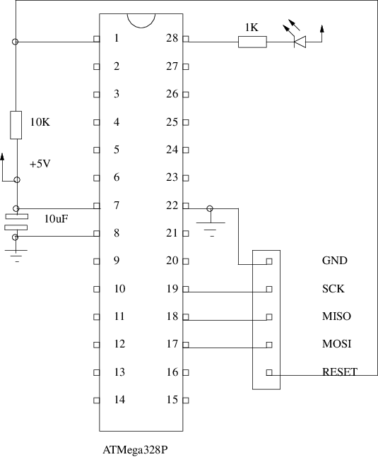

MODULE flashled ;
PROCEDURE Turn (on: BOOLEAN) ;
BEGIN
IF on
THEN
(* turn LED on *)
ASM VOLATILE ("cbi 8,5");
ELSE
(* turn LED off *)
ASM VOLATILE ("sbi 8,5");
END
END Turn ;
(*
InitLed - initialize pin 0 as an output
*)
PROCEDURE InitLed ;
BEGIN
ASM VOLATILE ("sbi 7,5")
END InitLed ;
CONST Delay = 400 ; VAR i, j: CARDINAL ;
BEGIN
InitLed ;
Turn(FALSE) ;
LOOP
FOR i := 0 TO Delay DO
FOR j := 0 TO Delay DO
ASM VOLATILE ("nop")
END
END ;
Turn(TRUE) ;
FOR i := 0 TO Delay DO
FOR j := 0 TO Delay DO
ASM VOLATILE ("nop")
END
END ;
Turn(FALSE)
END
END flashled.
This document was produced using groff-1.22.